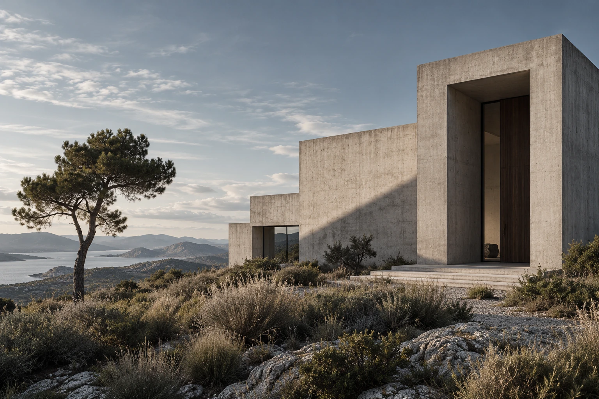

A monolithic frame for a slower kind of everyday.
INDEPENDENT ARCHITECTURE STUDIOSPACES / STRUCTURES / STORIES
Space.
With intention.
Architecture that listens to its surroundings.
And gives something meaningful back.

01 / THE QUIET HOUSERESIDENTIAL CONCEPT · 2026
A SELECTED BODY OF WORKBuilt around
Built around
a way of living.
Natural light as the first material in the room.
Between
two courtyards.
A spatial study in privacy and connection. Two open rooms, a sheltered passage, and a daily dialogue with the sky.
Private livingShared courtyardGarden threshold
All projects are fictional design studies. Images are architectural visualisations, not photographs of completed buildings.
THE STUDIOWe begin
We begin
by paying attention.
To the site. To the light. To the way a space might feel on an ordinary Tuesday.
MONOFORM is an imagined architecture practice exploring the relationship between people, materials and place. Our work favours clear gestures, honest surfaces and room for life to happen.
CONTEXT BEFORE FORMMATERIALS WITH PURPOSESPACE FOR EVERYDAY LIFE
FROM FIRST THOUGHT TO FINAL DETAILA clear process.
A clear process.
An open dialogue.
Listen & observe
Understand the site, the people and the daily rituals the project will hold. Build a shared brief before drawing a line.
Explore & refine
Test spatial ideas through drawings, models and materials. Let constraints bring the essential qualities into focus.
Resolve & realise
Bring the design into detail. Coordinate structure, finishes and craft into a coherent whole.